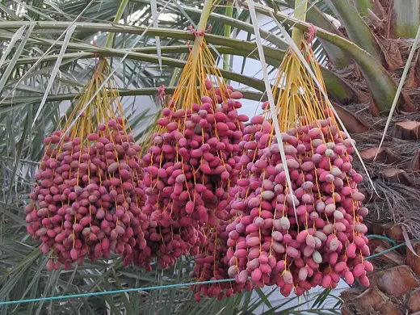

Desserts
Fresh rutab
Fresh rutab is made with wild dates.

How do you make fresh rutab?
Soft, half-ripe summer dates eaten straight from the bunch with Arabic coffee.
Wild ingredients
- Dates (Phoenix dactylifera): in season June to September